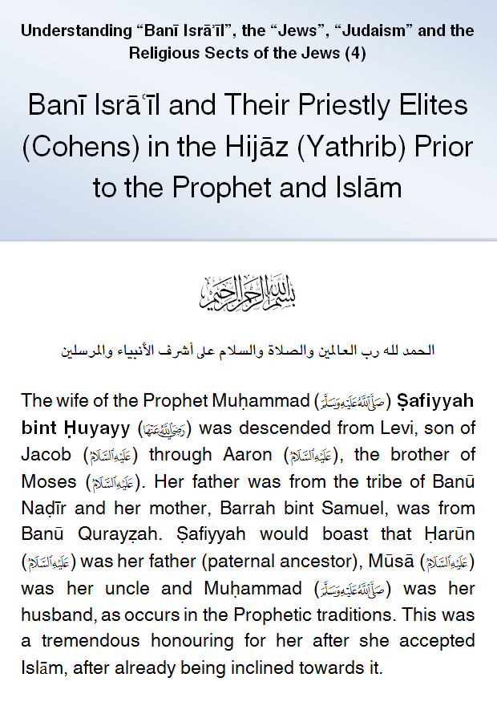
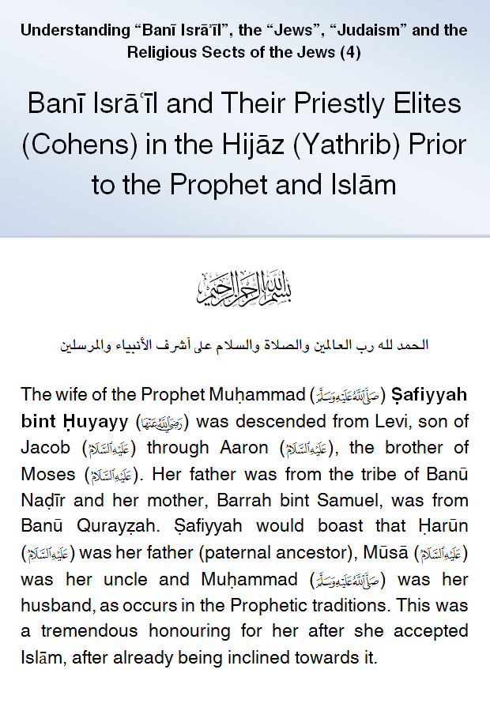

IslamMoses.Com
Posted by Abu Iyaad on Sunday, September, 23 2018 and filed under General
Key topics: Israelites • Children Of Israel • Judaism • Cohens

|
IslamMoses.Com |
|
Banī Isrāʿīl and Their Priestly Elites (Cohens) in the Hijāz (Yathrib) Prior to the Prophet and Islām Posted by Abu Iyaad on Sunday, September, 23 2018 and filed under General Key topics: Israelites • Children Of Israel • Judaism • Cohens 
|